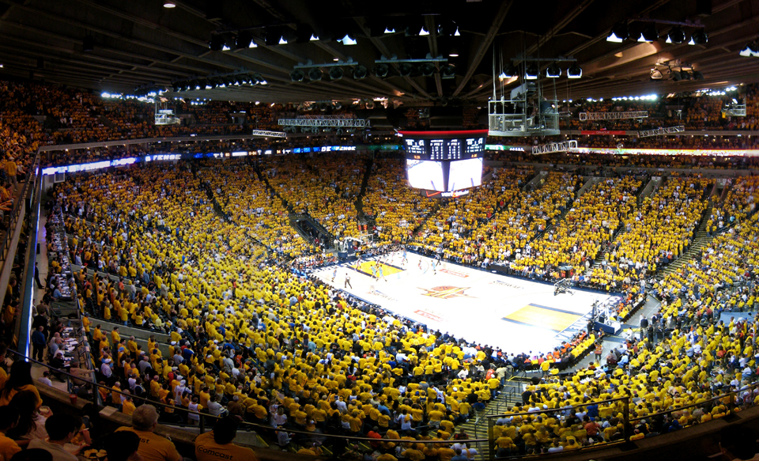

Oracle Arena
A Oracle Arena é um ginásio poliesportivo localizado na cidade de Oakland, na Califórnia, Estados Unidos. Possui uma capacidade de 19.596 espectadores em jogos de basketball e de 17.000 em jogos de hockey. Porém, desde 2007 já recebeu quatro vezes público superior a 20.000 em jogos de basketball do Golden State Warriors (equipe da NBA que usa o ginásio como sede de suas partidas), sendo o último grande público 20.737 em abril de 2008. Em 2009 recebeu a grandiosa turnê de Britney Spears, a The Circus Starring: Britney Spears, onde teve todos os bilhetes vendidos. Em 2011 a Oracle Arena recebeu o evento Elimitation Chamber realizado pela WWE.
